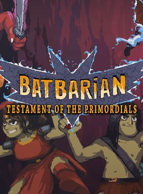

Batbarian: Testament of the Primordials
Batbarian: Testament of the Primordials
Details
|  | |
| Playtime | Not Played |
| Last Activity | Never |
| Added | 4/12/2022 22:47:38 |
| Modified | 5/3/2022 20:59:27 |
| Completion Status | $Check Out |
| Library | Itch.io |
| Source | itch.io |
| Platform | PC (Windows) |
| Release Date | 10/12/2020 |
| Community Score | 80 |
| Critic Score | 79 |
| User Score | |
| Genre | Adventure Platformer Puzzle RPG |
| Developer | Unspeakable Pixels |
| Publisher | DANGEN Entertainment |
| Feature | Single Player |
| Links | Steam Official Website GOG Discord Itch |
| Tag | [EMT] Logo Missing |
Description
*Crash* ...That was the sound of you landing face first in an abyss filled with monsters, traps, and eldritch secrets. But hey, it's ok barbarian, you are not alone: Pip, your best friend -and mysteriously luminous bat- is with you. And it's only by truly working together that you'll be able to solve the abyss' puzzles, fight off its hungry denizens, discover its true purpose and maybe—just maybe—make it out alive with the secrets of the primordials.

Reviews
“If you like Metroidvanias, you should play this game. If you don’t like Metroidvanias, you should still play this game.”
92/100 – COGconnected
“From the lushly drawn environments and detailed character sprites to the phenomenally atmospheric music that brings the game’s world to life, it’s a hell of an experience and easily one of my favorite indie games of 2020.”
4.5/5 – HeyPoorPlayer
“A wonderfully crafted Metroidvania that should have genre fans plenty excited. It's blending of combat, platforming, and puzzling keeps the gameplay fresh and varied throughout its entire 20-hour story.”
85/100 – PC invasion

Change Pip's elemental aura to block bullets of the opposite element!
Key Features
- Gain new skills for your barbarian and elemental powers for Pip, the (magic) bat!
- A narrative-driven metroidvania with dialogue choices and plenty of humor and snark.
- Big numbers! 400+ rooms, 20+ hours of evolving gameplay, 10+ bosses, 60+ minutes of music and almost 30,000 words of text that a barbarian would never bother to read!
- Puzzles.
- RPG elements with a level-up minigame.
- Contains more fruit throwing than probably any other game.
- Companions that join you in your quest and help you out in fights.
- Multiple endings based on your choices and actions.
- The thrown fruit are NOT wasted, they are eaten by the bat (who is magic).
- A ton of secrets and hidden loot just about everywhere.
- The (magic) bat has a whopping FIVE different squeaking sounds!
- Fewer repetitive jokes than this description has.

A controller is recommended for an optimal experience.
Batbarian: Testament of the Primordial is also available for Switch.
Additional Content:
Batbarian: Testament of the Primordials Original Soundtrack
Batbarian: Testament of the Primordials + Original Soundtrack Bundle